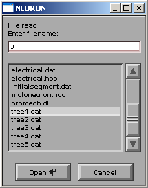

Motoneuron-Morphology
Motoneuron-Morphology is a MATLAB
based application, which simulates morphology of spinal motoneurons of the
neonatal rat in the three dimensional space on the basis of experimental
observations. Passive electrical properties and densities of three main
voltage-activated (sodium and two potassium) channels can be selected for
entire motoneuron or its sections. Subsequent application of the NEURON code
for simulating the electrical properties of the modeled motoneuron is possible.
Technical notes
Since NeuroMorphology was written as
a MATLAB graphical user interface (GUI), it can only be run with MATLAB 6.5 (or
later). MATLAB documentation and license information can be found on the MATLAB home page. NEURON
version 5.7.71 was freely downloaded from NEURON home page at
Downloading and running of NeuroMorphology
NeuroMorphology can be downloaded
from this site as a NeuroMorph.zip archive containing the following
eight MATLAB files and one folder (neuron) with additional six NEURON
files:
·
axon.m –
M-file contains axon function which builds axon hillock, initial segment
and axon proper with default or user defined lengths and diameters;
·
dendrites.m –
M-file contains dendrites function which simulates the dendritic tree of
the motoneuron on the basis of stochastic variations of dendritic tree
dimensions in the default or user defined boundaries;
·
dendrogram.m
– M-file contains dendrogram function which calculates relative
complexity and builds a dendrogram of modeled motoneuron;
·
NeuroMorphology.fig – file contains a complete description of the NeuroMorphology GUI figure
layout and its components. This GUI should be selected from the MATLAB Open
Existing GUI dialog (enter GUIDE at the MATLAB prompt);
·
NeuroMorphology.m
– M-file that contains the code that controls the NeuroMorphology GUI,
including the callbacks for its components;
·
soma.m –
M-file is responsible for creating the soma as a prolate spheroid with the
default or user defined dimensions;
·
To_NEURON.fig
– file contains a complete description of the To_NEURON GUI figure layout and
its components. To_NEURON GIU is loaded from the NeuroMorphology interface
after clicking on the NEURON button;
·
To_NEURON.m
– M-file that contains the code that controls the To_NEURON GUI and its
callbacks;
·
neuron/electrical.hoc – file contains set of commands which should be loaded to NEURON to
define electrical properties of modeled motoneuron;
·
neuron/IKaSM.mod – file contains description of the potassium fast (KA)
current specific for spinal motoneurons which was used for our simulation
(see Safronov et al., 2000);
·
neuron/IKdrSM.mod – file contains description of the potassium delayed rectifier (KDR)
current expressed in the spinal motoneurons which was used for our
simulation (see Safronov et al., 2000);
·
neuron/INaSM.mod – file contains description of the sodium current specific for spinal
motoneurons which was used for our simulation (see Safronov et al.,
2000);
·
neuron/motoneuron.hoc – file contains set of commands which produce loading of the
modeled motoneuron’s morphology into the NEURON;
·
neuron/nrnmech.dll
– file contains compiled mechanisms (IKaSM, IKdrSM and INaSM) and should
be loaded to NEURON for simulation of voltage-dependent currents.
Unpack NeuroMorph.zip archive into a MATLAB current directory and open NeuroMorphology.fig as an Existing GUI using MATLAB standard procedure. Briefly, to open NeuroMorphology enter GUIDE at the MATLAB prompt, go to the GUIDE Open Existing GUI dialog and open NeuroMorphology.fig. After opening the GUI, you can run it by selecting Run from the Tools menu or clicking the Run button on the GUIDE toolbar. If the directory where you unpack the NeuroMorph.zip is not on the MATLAB path change the current working directory to the directory containing NeuroMorphology.fig or add that directory to the MATLAB path.
Using NeuroMorphology (an example)
After running the NeuroMorphology its
graphical user interface will appear.
Picture below briefly introduces main parts of the interface.
Let’s leave all the parameters as
they are and just click on the Start
button. Relative complexity graph and dendrogram would appear in the main
window. Plus additional window with 3D neuron representation should become
visible. MATLAB provides a set of useful tools to rotate, zoom in/out and save
the 3D image.
To get numerical values describing
simulated neuron click the Report
button on the main panel. The Report
file will appear in the MATLAB current directory. Sometimes it can be useful to
save current setting (dimensions) in the separate file to compare different
results or analyze data. To do so, click on the Setting button (after clicking Settings
file will appear in the MATLAB current directory). For abbreviations and terms
see Glossary.
If we are satisfied with the
simulated neuron in terms of its morphology, let’s try to introduce distributed
voltage-dependent currents. Click on the NEURON
button on the main window. To_NEURON dialog will appear. The following picture
describes this dialog window.
At this point we would like to change
Na+, Ka and Kdr conductances to certain values.
After doing this To_NEURON dialog window should look like the following:

Click on the Generate NEURON code button to prepare data for electrical
simulation. Now all the data are transformed to the code for further use with
the NEURON simulator and saved in the MATLAB current directory’s folder neuron (if you unpack the
NeuroMorphology archive rather than the MATLAB current directory, it is useful
to copy all six NEURON files to the folder neuron
now).
Files with .dat extension are created by NeuroMorphology, their names indicate
their content.
NeuroMorphology and NEURON
First of all, change the NEURON working
directory to the neuron folder in the
MATLAB working directory (it may be useful to copy simulation results to some
another directory if you are going to create a network or something like this).
If NEURON was installed properly, it should detect nrnmech.dll file in this directory and load membrane “mechanism”
from it (INaSM, IKaSM and IKdrSM).
Commands translating neuron
morphology into NEURON are located in the motoneuron.hoc
file. Once this file has been loaded to NEURON, it automatically reads data
from all generated files except .dat
files whose name starts with ‘tree’ (tree1.dat
for example). NEURON will ask you to choose these files one by one as it shown
here.

After you finish loading morphology,
the next step is to load electrical properties of the simulated neuron. For
this use electrical.hoc. Now
everything is ready for simulation. By default, we introduced “single pulse
current clamp point process” into the center of the soma (IClamp[0] at soma 0.5). Open the Voltage
axis graph and the RunControl panel, then press Init & Run button to
see the voltage response of the simulated neuron to the current step of 0.5 nA
amplitude applied to the center of the soma. Results and NEURONS’s panels are
shown below. We just opened “Distributed Mechanism viewer/Shape Name/soma” to
insure that we have correctly loaded the simulated neuron. The dimensions and
electrical properties of the soma are the same as in the Soma report and
To_Neuron dialog (see above).